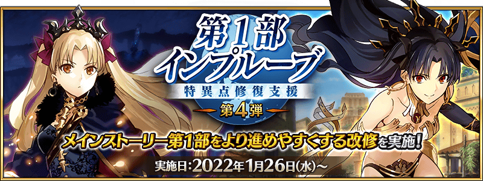
對於新手御主及進行主線故事第1部中的御主的各位，實施讓第1部更容易推進而進行修改的「第1部改善」！
由於會依序進行修改，藉此機會務必推進主線故事吧！
※本頁面皆為開發中圖片。會有與實際圖片相異的情況。
◆實施時間◆
2021年12月31日(五) 23:00～
◆第1部改善最新情報◆
▶第1部改善最新情報第1彈情報
▶第1部改善最新情報第2彈情報
▶第1部改善最新情報第3彈情報
▶第1部改善最新情報第4彈情報NEW!

對於從今開始的玩家，在遊戲開始後的教學進行的聖晶石召喚中，從者的抽出機率提升！
此11次召喚中確定1位★4(SR)從者、1張★4(SR)概念禮裝。
◆翻新實施時間◆
2021年12月31日(五) 23:00～
成為召喚對象★4(SR)從者為以下的14位！
◆召喚對象★4(SR)從者◆
| 職階 | 稀有度 | 從者名 |
|---|---|---|
| Saber | ★★★★ | 齊格飛 |
| ★★★★ | 鈴鹿御前 | |
| Archer | ★★★★ | 阿塔蘭塔 |
| ★★★★ | Emiya | |
| Lancer | ★★★★ | 伊莉莎白・巴托里 |
| ★★★★ | 帕爾瓦蒂 | |
| Rider | ★★★★ | 瑪莉・安東尼 |
| ★★★★ | 瑪爾大 | |
| Caster | ★★★★ | 海倫娜・布拉瓦茨基 |
| ★★★★ | 童謠 | |
| Assassin | ★★★★ | 卡米拉 |
| ★★★★ | 絲西娜 | |
| Berserker | ★★★★ | 玉藻貓 |
| ★★★★ | 海克力斯 |
在戰鬥出撃時的支援從者選擇中，進行修改讓敵人的職階是Foreigner以外的EXTRA職階的情況，最初會顯示Berserker。由於目前為止在EXTR有多種職階存在而有時會顯示處於不利的職階，據此修改變得會在最初顯示增加給予傷害的Berserker。
※對上Foreigner，會如以往顯示EXTRA。
◆翻新實施時間◆
2021年12月31日(五) 23:00～
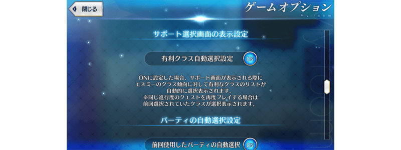
※在個人空間(マイルーム)的「遊戲選項」，本功能也能設定成OFF。在OFF的情況，會選擇顯示在上次出撃時選擇的職階。
進行調整讓御主等級較低的從者編成時COST上限比現在還高。據此調整，變得就算御主等級低的狀態也容易編成COST高的從者和概念禮裝。
◆翻新實施時間◆
2022年1月12日(三) 17:00～
◆COST調整例◆
| 御主等級 | 現在的COST | 調整後的COST |
|---|---|---|
| 1 | 25 | 56 |
| 25 | 55 | 68 |
| 50 | 73 | 80 |
| 75 | 86 | 93 |
| 100 | 98 | 103 |
| 120 | 109 | 109 |
※御主等級120以後的COST沒有變更。 ※透過等級提升的最終COST最大值沒有變更。
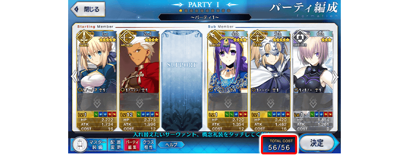
在關卡開始時的演出中點擊畫面的話，修改成可跳過演出。
主線關卡是第2次以後、主線關卡以外的幕間物語和自由關卡等從初次就能跳過演出。
※關於主線關卡，在關卡開始後曾經進行過戰鬥的情況，從下次開始時即可跳過關卡的開始演出。 ※會有無法跳過一部份特別關卡開始演出的情況。
◆翻新實施時間◆
2022年1月12日(三) 17:00～
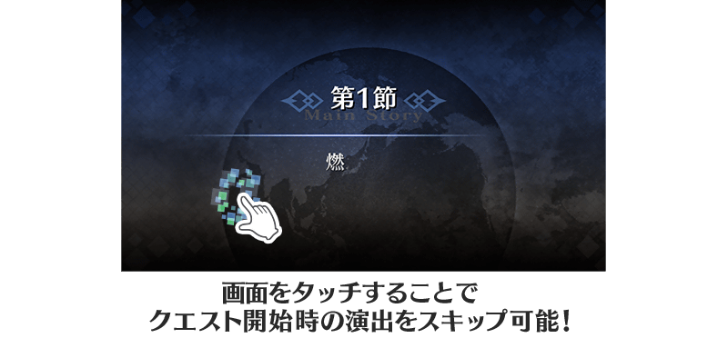
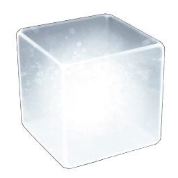
可交換素材道具的新道具「純粹稜鏡」登場！
變得就算新手御主也可用「純粹稜鏡」來獲得於主線關卡第2部才能獲得的素材道具。
「純粹稜鏡」只可做為主線關卡的通過報酬獲得。
另外由於「純粹稜鏡」的獲得數有限，喜愛從者的育成和想要於未通過章節才能入手的素材道具時等，請慎重活用。
※已經通過可獲得「純粹稜鏡」關卡的情況，會將對應關卡通過數的「純粹稜鏡」送到禮物箱。
◆新道具追加時間◆
2022年1月19日(三) 17:00～
■關於「純粹稜鏡」
「純粹稜鏡」是可交換素材道具的新道具。
交換在從者強化必須的素材，在從者育成派上用場吧！
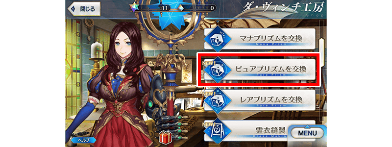
※能交換的道具包含主線關卡第1部、亞種特異點Ⅰ～Ⅳ、第2部 第6章為止做為對象於未通過章節才可獲得的素材道具、各種銀像、金棋、輝石、魔石、秘石。 ※無法交換期間限定的活動道具。 ※可用「純粹稜鏡」交換的數量，每個道具各自100個為止。
在「御主任務」的「Extra(エクストラ)」標籤內追加朝向新手御主的「教學任務」。
通過所有的任務後，可得到在從者育成派上用場的銀像和金棋、輝石、魔石、秘石！
◆實施時間◆
2022年1月19日(三) 17:00～
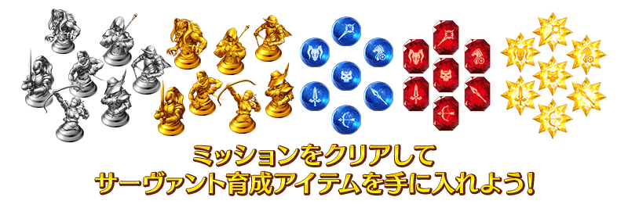
※關於已經達成條件的任務，可從御主任務畫面領取已經達成的報酬。
可在達文西工房的「稀有稜鏡交換」開放的高難易度活動「監獄塔內復仇鬼的哭泣」關卡，變得通過主線關卡第1部 第四特異點後免費開放！
※已經用「稀有稜鏡交換」交換的情況，會返還交換使用的同數量稀有稜鏡到禮物箱。 ※就算已經通過在2016年舉辦的期間限定活動「監獄塔內復仇鬼的哭泣」、在2017年舉辦的期間限定活動「復刻:監獄塔內復仇鬼的哭泣」的情況也可遊玩。 ※故事與2016年舉辦時同樣內容。 ※「監獄塔內復仇鬼的哭泣」的關卡中適用的支援編成設定成「普通關卡」。
◆免費開放時間◆
2022年1月19日(三) 17:00～
※「監獄塔內復仇鬼的哭泣」關卡開放權的免費開放沒有期限。
◆免費開放條件◆
滿足以下條件的御主才能免費交換
・通過主線關卡第1部「第四特異點 死界魔霧都市 倫敦」
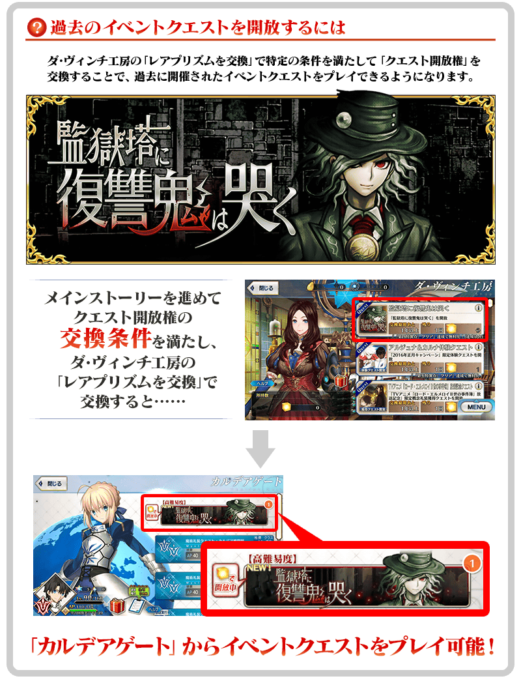
關於在通過主線關卡後追加的高難易度挑戰關卡
通過「監獄塔內復仇鬼的哭泣」所有主線關卡的話，以通過「終局特異點」的御主為對象，開放更高難易度的挑戰關卡。
在通過挑戰關卡時可獲得報酬。 ※挑戰關卡通過一次後無法再挑戰。
◆挑戰關卡參加條件◆
滿足以下條件的御主才能參加
・通過「監獄塔內復仇鬼的哭泣」的所有主線關卡
・通過「終局特異點」
◆挑戰關卡通過報酬◆
呼符 3張
可在達文西工房的「稀有稜鏡交換」開放的「阿周那＆迦爾納體驗關卡」，變得通過主線關卡第1部 第五特異點後免費開放！
可迎接「★5(SSR)阿周那」、「★5(SSR)迦爾納」做為支援成員，挑戰關卡關卡！
可體驗各從者的技能和寶具！
※已經用「稀有稜鏡交換」交換的情況，會返還交換使用的同數量稀有稜鏡到禮物箱。 ※就算在滿足免費開放的條件前於「稀有稜鏡交換」交換該關卡的情況，也會在通過主線關卡第1部 第五特異點條件滿足的時間點返還使用的稀有稜鏡。 ※迦爾納的體驗關卡會在通過阿周那的體驗關卡後開放。
◆免費開放時間◆
2022年1月19日(三) 17:00～
※「阿周那＆迦爾納體驗關卡」關卡開放權的免費開放沒有期限。
◆免費開放條件◆
滿足以下條件的御主才能免費交換
・通過主線關卡第1部 「第五特異點 北美神話大戰 合眾為一」
◆關卡通過報酬◆
呼符 各1張


在2018年舉辦的期間限定活動「從者．夏日．慶典！」中登場的「★5(SSR)巖窟王 愛德蒙・唐泰斯」靈衣「基督山特選」開放權、在2020年舉辦的期間限定「Fate/Grand Order ～5th Anniversary～」中登場的「★5(SSR)阿周那」靈衣「天授的旅裝」開放權獲得關卡在達文西工房的「靈衣縫製」追加！
用稀有稜鏡5個交換後，可入手上述靈衣開放權及靈衣開放權獲得關卡。
並且，有通過主線關卡第1部 第四特異點的情況可免費交換靈衣「基督山特選」開放權、有通過主線關卡第1部 第五特異點的情況可免費交換靈衣「天授的旅裝」開放權獲得關卡！
另外，想靈衣開放的話，除了靈衣開放權外再加上必須滿足一些開放條件。
◆追加時間◆
2022年1月19日(三) 17:00～
◆交換條件◆
滿足以下條件的御主才能交換
■靈衣「基督山特選」開放權
・通過「特異點F 炎上汙染都市 冬木」
・未入手靈衣「基督山特選」開放權
■靈衣「天授的旅裝」開放權獲得關卡
・通過「特異點F 炎上汙染都市 冬木」
・未通過「阿周那靈衣獲得關卡」
※追加到「靈衣縫製」的靈衣「基督山特選」開放權、靈衣「天授的旅裝」開放權為永久，沒有交換期限。 ※關於已經取得交換對象靈衣開放權的玩家，無法交換。 ※在用稀有稜鏡5個交換靈衣「基督山特選」開放權、靈衣「天授的旅裝」開放權獲得關卡後達成免費化條件的情況，會返還交換使用的稀有稜鏡5個到禮物箱。
◆靈衣開放權及靈衣開放權獲得關卡交換免費化的條件◆
滿足以下條件的御主才能免費交換
■靈衣「基督山特選」開放權
・通過主線關卡第1部 「第四特異點 死界魔霧都市 倫敦」
■靈衣「天授的旅裝」開放權獲得關卡
・通過主線關卡第1部 「第五特異點 北美神話大戰 合眾為一」
◆有關靈衣開放權的注意◆
※「★5(SSR)巖窟王 愛德蒙・唐泰斯」「★5(SSR)阿周那」的靈衣會隨著外觀變化一部份語音。
※請注意未持有「★5(SSR)巖窟王 愛德蒙・唐泰斯」「★5(SSR)阿周那」的情況，可入手靈衣開放權。但無法進行靈衣開放。
◆追加道具(永久)◆
| 追加道具 | 能交換次數 | 1次交換所需的 稀有稜鏡數 |
|---|---|---|
| 靈衣「基督山特選」開放權 | 1次 |
5個 有通過主線關卡第1部 第四特異點的情況才能免費交換！ |
|
靈衣「天授的旅裝」開放權 獲得關卡 |
1次 |
5個 有通過主線關卡第1部 第五特異點的情況才能免費交換！ |
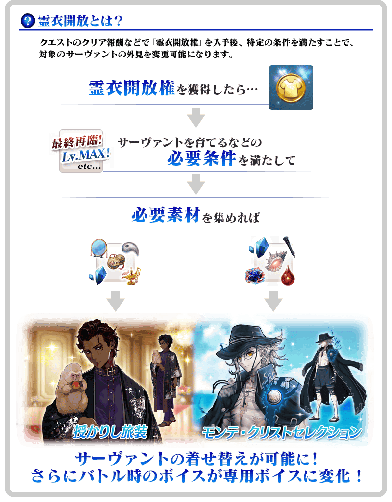

「靈衣開放」是自強化畫面進行。
※「靈衣開放」後會自動切換戰鬥角色和圖示。若想回到「靈衣開放」前的狀態和變成其他再臨階段的情況，可自從者詳細畫面變更。 ※進行「靈衣開放」不會讓職階和能力等有所變化。
介紹靈衣開放「基督山特選」、「天授的旅裝」的2位從者寶具演出！
對象從者2騎的寶具演出於一部份裝置有對應全螢幕顯示。
【基督山特選(モンテ・クリストセレクション)】
【天授的旅裝(授かりし旅装)】

只能靠自己培育的從者來挑戰的測試用關卡「進階關卡」在迦勒底之門追加！
「進階關卡」在滿足開放條件後就能挑戰，通過關卡的話可獲得特別的概念禮裝。
與培育的從者一起挑戰「進階關卡」，測試自己的實力吧！
關於進階關卡預定今後也會持續追加！
詳情在此！

※在「進階關卡」沒有文字冒險部份。
◆開放關卡◆
【進階關卡】戰鬥訓練程式 三騎士篇
◆追加時間◆
2022年1月26日(三) 17:00～
※「進階關卡」沒有舉辦期限。
◆開放條件◆
滿足以下條件的御主才能開放
・通過主線關卡第1部「第四特異點 死界魔霧都市 倫敦」
◆在進階關卡中的注意點◆
・進階關卡中無法選擇支援從者，只能靠自己的從者進行戰鬥。
・進階關卡通過一次後就無法再挑戰。
・進階關卡的戰鬥無法接關。
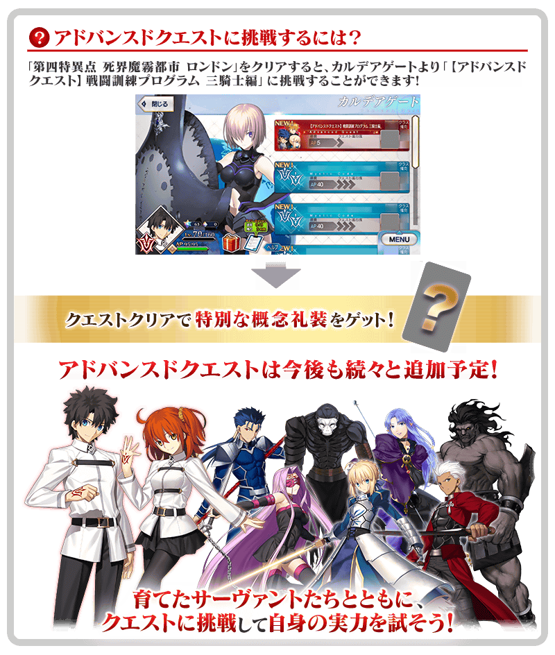
通過「【進階關卡】戰鬥訓練程式 三騎士篇」後，在關卡通過時可獲得提升「虛影之塵」掉落率的概念禮裝「★4(SR)無尽の塵山」。
※可於「【進階關卡】戰鬥訓練程式 三騎士篇」獲得的「★4(SR)無尽の塵山」只限1張。第2張以後有預定可在今後的措施獲得。
| 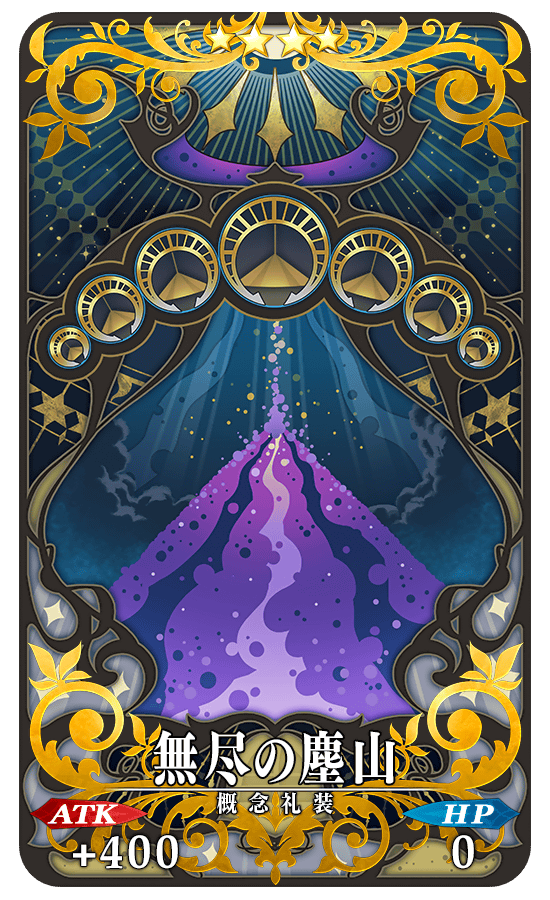 |
★★★★SR
|
可在達文西工房的「稀有稜鏡交換」開放的「Main Interlude 冥界的聖誕快樂」，變得通過主線關卡第1部 第七特異點後可免費開放！
※已經用「稀有稜鏡交換」交換的情況，會返還交換使用的同數量稀有稜鏡到禮物箱。
◆免費開放時間◆
2022年1月26日(三) 17:00～
※「Main Interlude 冥界的聖誕快樂」關卡開放權的免費開放沒有期限。
◆免費開放條件◆
滿足以下條件的御主才能免費交換
・通過主線關卡第1部「第七特異點 絕對魔獸戰線 巴比倫尼亞」
◆有關「Main Interlude 冥界的聖誕快樂」的注意◆
※就算已經通過在2017年舉辦的期間限定活動「冥界的聖誕快樂」、在2018年舉辦的期間限定活動「復刻:冥界的聖誕快樂 輕量版」的情況也可遊玩。
※已經通過「Main Interlude 冥界的聖誕快樂」的情況無法再度遊玩。
※故事與2017年舉辦時同樣內容。
※無法獲得活動道具。
※可在通過關卡時獲得的戰利品及關卡通過報酬與過去舉辦活動的報酬不同。
※無法遊玩自由關卡、高難易度關卡等主線關卡以外的活動關卡。
※「Main Interlude 冥界的聖誕快樂」的關卡中適用的支援編成設定成「平常關卡」。
關於「Main Interlude 冥界的聖誕快樂」加入從者
「Main Interlude 冥界的聖誕快樂」中，藉由推進主線關卡讓「★4(SR)阿提拉・the・San〔誕〕」暫時加入。
「★4(SR)阿提拉・the・San〔誕〕」可藉由推進主線關卡至最後正式加入。
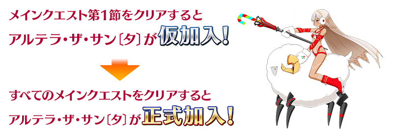
還有，在「★4(SR)阿提拉・the・San〔誕〕」的靈基再臨必須道具「聖誕老人鬍子」，可藉由推進主線關卡入手。
※「阿提拉・the・San〔誕〕【寶具強化用】」為免費化的對象外。 ※「阿提拉・the・San〔誕〕【寶具強化用】」可在達文西工房的「稀有稜鏡交換」交換。關於交換1位必須有2個稀有稜鏡。還有，在已經可強化「★4(SR)阿提拉・the・San〔誕〕」到寶具等級5狀況的情況，無法交換。 ※在通過「Main Interlude 冥界的聖誕快樂」時入手「累計第6位以後」「★4(SR)阿提拉・the・San〔誕〕」的話，贈送稀有稜鏡1個到禮物箱。
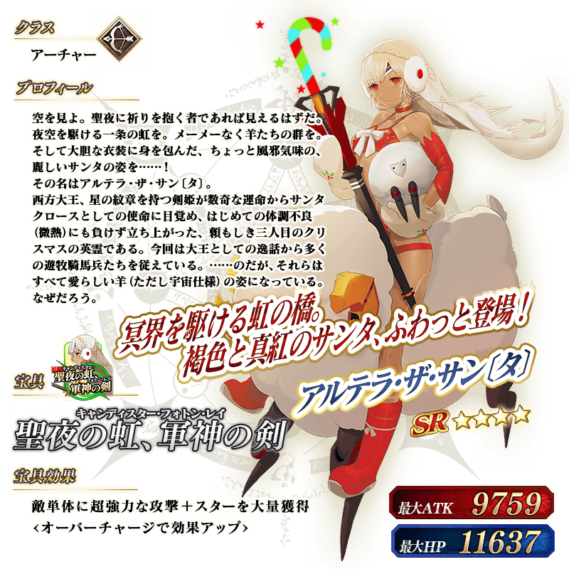
介紹「阿提拉・the・San〔誕〕」的寶具演出！
介紹「★4(SR)阿提拉・the・San〔誕〕」的寶具演出！
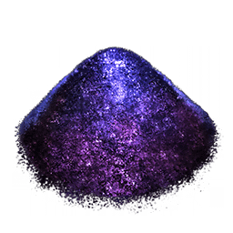
向滿足條件的御主對象，有可獲得技能強化＆靈基再臨素材「虛影之塵」做為戰利品可能性的自由關卡的初次通過前消耗AP以期間限定變成1/2！(就算在戰鬥中撤退的情況，也會是同様的消耗量)
務必藉此機會，收集道具來強化從者吧！
◆舉辦期間◆
2022年1月26日(三) 17:00～2月2日(三) 11:59
◆成為對象的條件◆
滿足以下條件的御主對象
・通過主線關卡第1部「第七特異點 絕對魔獸戰線 巴比倫尼亞」
◆對象關卡◆
有可獲得「虛影之塵」做為戰利品可能性的主線關卡內自由關卡
※初次通過是指入手初次通過報酬的時間點。
【1月26日(三) 17:00更新】
其他還有，「進階關卡 第1彈」追加！
另外，「冥界的聖誕快樂免費開放記念Pick Up召喚」以期間限定同時舉辦！
關於詳情，請自下述橫幅確認。
■「進階關卡 第1彈」詳細情報
■「冥界的聖誕快樂免費開放記念Pick Up召喚」詳細情報